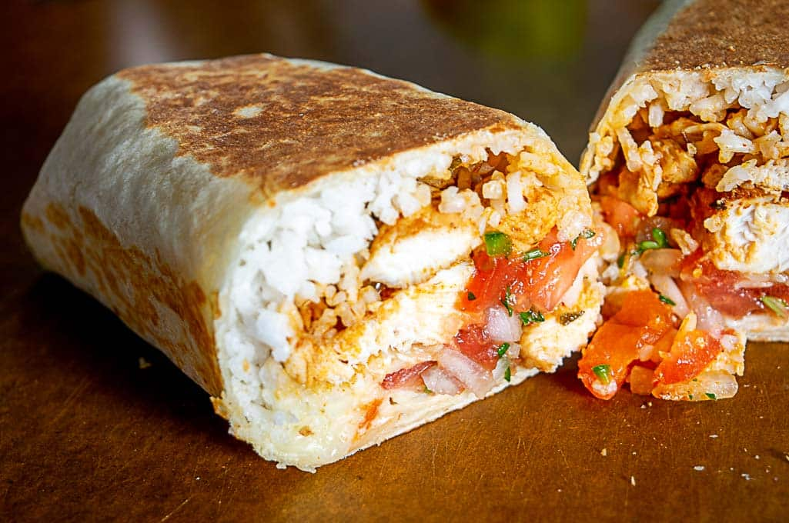

Chicken Burrito 🌯

This is what you'll have on your plate when done reading and mastering this recipe!
Ingredients
- Tortilla: Large flour tortillas.
- Chicken: Cooked and seasoned, often shredded or diced.
- Rice: Cooked, often seasoned Mexican or cilantro-lime rice.
- Beans: Black beans or pinto beans, cooked.
- Cheese: Shredded cheese, such as cheddar or Monterey Jack.
- Salsa: Fresh salsa or pico de gallo.
- Lettuce: Shredded lettuce.
- Tomato: Diced fresh tomato.
- Guacamole: Optional, for extra flavor.
- Sour Cream: Optional, for a creamy texture.
- Onion: Diced, optional.
- Cilantro: Chopped, optional.
Steps
- Warm the tortilla over medium heat for 20-30 seconds on each side.
- Assembly
- Lay the tortilla down on a flat, clean surface.
- In the center of the tortilla, layer the ingredients
- Start with the cooked rice.
- Add the cooked chicken on top of the rice.
- Add the cooked beans.
- Sprinkle the shredded cheese over the beans.
- Add the salsa or pico de gallo.
- Add the shredded lettuce and diced tomato.
- Add guacamole and sour cream if using.
- Sprinkle diced onion and chopped cilantro if desired.
- Fold the burrito
- Fold the sides toward the cneter.
- Roll the tortilla from the bottom up, tucking in the sides as you go, forming a tight burrito.
- Enjoy!
Home